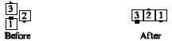

In a Tandem-based Triangle, the apex is the trailer. Mentally add a phantom in front of the apex to make a box of four. Now such calls as Peel Off, Peel and Trail, and Trail Off can be done treating the Tandem-Based Triangle as a box of four. Tandem-Based Triangle Peel & Trail:
